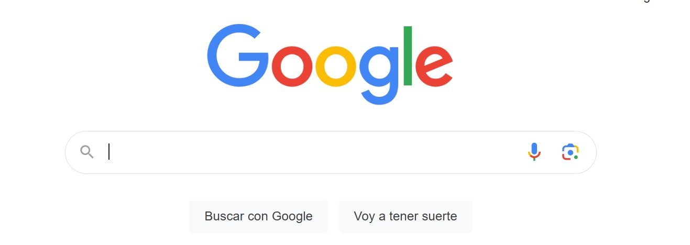

Conéctate al Mundo Digital: Computación para Personas Mayores desde Cero
Francisco Alfaro
Valeska Canales
2024-10-28
🯠Objetivos del Curso
Familiarizarse con los Dispositivos Básicos
Conocer y Usar Programas Básicos de Oficina
Navegar en Internet de Forma Segura
Aprender a Utilizar Aplicaciones Útiles y Páginas de Interés
Desarrollar Habilidades en Redes Sociales
Realizar Transferencias Electrónicas y Pagos en LÃnea de Forma Segura
Computador
🤔 ¿Qué es un computador?
- 🖥️ Un computador es una máquina que ayuda a realizar tareas de forma rápida y organizada.
- Es como una “oficina†en una caja, donde se pueden:
- Escribir documentos 📄
- Enviar correos 📧
- Ver fotos 📷
- Conectarse con amigos y familiares 👥
- Funciona con programas o aplicaciones, que son como herramientas en una caja de herramientas 🧰
Notebook
🤔 ¿Qué es un notebook?
- 💻 Un notebook es un computador pequeño y liviano que se puede llevar a cualquier lugar.
- A diferencia de un computador de escritorio:
- Todo está integrado en una sola pieza 🧩
- Funciona con baterÃa🔋
- Es ideal para usar en diferentes lugares, dentro y fuera de casa 👩🏻‍💻🧑🏻‍💻
Celular Inteligente

🤔 ¿Qué es un Celular Inteligente?
- 📱 Un celular inteligente es un dispositivo portátil que combina funciones de teléfono y computador.
- Permite hacer llamadas, enviar mensajes, y conectarse a internet 📞
- Se pueden instalar aplicaciones para diversas tareas: desde redes sociales hasta banca en lÃnea ⬇️
- Es ideal para mantenerse en contacto y acceder a información en cualquier momento y lugar ⌚
🖥️ Conocer las Partes del Computador
💡 Encender el Computador
Encender la CPU
Encender el monitor
Encender el notebook
🔠Identificar el Escritorio
- Elementos principales:
- Barra de tareas
- Iconos
🖱️⌨️ Usar el Mouse y el Teclado
- Practicar cómo mover el puntero con el mouse y hacer clic.
- Enseñar a hacer clic izquierdo para seleccionar y doble clic para abrir.
- Practicar escribir en el teclado (ejemplo: escribir su nombre en un documento).
📄 Abrir y Cerrar Programas
- Mostrar cómo hacer clic en el botón de inicio para abrir programas (como Word o el navegador).
- Practicar abrir y cerrar programas, usando el botón de la “X†en la esquina superior.
🛜 Navegar en Internet
- Explicar qué es el navegador y abrir uno (Chrome o Firefox, por ejemplo).
- Practicar cómo buscar en Google escribiendo palabras clave, como “clima†o “noticias”.
🔘 Apagar el Computador
- Explicar que apagar el computador ayuda a mantenerlo en buen estado.
- Mostrar el proceso para apagar desde el botón de inicio > apagar.
⏰ Aprendamos a poner alarmas en el celular
ⰠAbrir la Aplicación de Reloj
- En la mayorÃa de los celulares, busca la aplicación llamada “Reloj”. Generalmente tiene un icono de un reloj.
- Si no la encuentras, puedes buscar “Reloj†en la barra de búsqueda de aplicaciones.
Seleccionar la Opción de “Alarma”
- Dentro de la aplicación, verás varias opciones como “Alarma”, “Temporizador”, y “Cronómetro”.
- Toca en Alarma.
⏰ Crear una Nueva Alarma
- Toca el icono de + o Añadir para crear una nueva alarma.
- Selecciona la hora y el minuto exactos para la alarma.
- Puedes configurar la alarma para que suene una sola vez o en dÃas especÃficos, lo cual es útil si necesitas recordatorios recurrentes, como un medicamento diario.
Personalizar la Alarma
- Etiqueta o Nombre: Escribe un nombre para que sepas a qué se refiere, como “Medicación†o “Cita Médica”.
- Repetición: Configura si deseas que suene todos los dÃas, o solo ciertos dÃas de la semana.
- Tono: Escoge un tono que sea fácil de reconocer.
⏰ Configurar Alarmas con Recordatorios Extra
- En algunos teléfonos, puedes crear recordatorios en la app de Calendario o Google Calendar. Esto permite que el teléfono te envÃe una notificación con la hora y el motivo del recordatorio.
- Ingresa la fecha y la hora de la cita, y selecciona “Añadir notificación”. Puedes agregar más de un aviso para que te recuerde varias veces antes de la hora indicada.
ⰠComprobación
- Verifica que las alarmas están activadas para que suenen en el horario adecuado.
- Recomienda a la persona revisarlas de vez en cuando para asegurarse de que están activas y programadas correctamente.
⏰ Consejos:
- Prueba las Alarmas: Si es su primera vez, es buena idea hacer una prueba y verificar que el sonido de la alarma es suficiente.
- Duración del Sonido: Asegúrate de que el tono dure lo suficiente para que se escuche, especialmente si es algo tan importante como un medicamento.
📡 Aprendamos a acceder a páginas de internet
📡 Abrir el Navegador de Internet
- Explica que debe buscar el navegador de internet en su celular o computador. Puede ser Google Chrome, Mozilla Firefox.
- Haga clic en el Ãcono para abrir el navegador.

📡 Ir a la Barra de Búsqueda o de Dirección
- Una vez en el navegador, escribir en la barra de búsqueda o barra de direcciones. Es el espacio en la parte superior donde puede escribir palabras o direcciones de sitios web.
📡 Ejemplo
- Escribamos “ChileAtiende†en la barra de búsqueda y luego presione Enter o toque el botón de Buscar.
- Esto le mostrará una lista de resultados; debemos hacer clic en el primer enlace oficial que aparece, que suele decir www.chileatiende.cl o ChileAtiende - Gobierno de Chile.
📡 Ingresar Directamente la Dirección
- Alternativamente, puede escribir directamente la dirección www.chileatiende.cl en la barra de direcciones si se siente cómodo.
- Luego, debe presionar Enter para abrir el sitio web.
📡 Navegar en el Sitio
- Una vez en el sitio de ChileAtiende, podemos desplazarnos hacia abajo o hacia arriba para ver más contenido.
- También podemos usar las opciones del menú en la parte superior o buscar un servicio especÃfico usando la barra de búsqueda dentro de la página.
📡 Consejos para Facilidad de Uso
- Guardar la Página: Si es una página que visitará frecuentemente, podemos guardar la página como marcador o favorito. Esto se hace generalmente tocando el Ãcono de estrella o seleccionando “Agregar a Favoritos†en el menú del navegador.
- Buscar Información en el Sitio: En la página de ChileAtiende, muchas veces la información está organizada por temas. Ahora escribiremos palabras clave como “pensiones†o “salud†en el buscador del sitio para encontrar información especÃfica.
📡 Resumen de los Pasos:
- Abrir el navegador.
- Ir a la barra de búsqueda y escribir “ChileAtiende”.
- Buscar y hacer clic en el enlace oficial.
- Explorar el sitio y guardar en favoritos si es necesario.